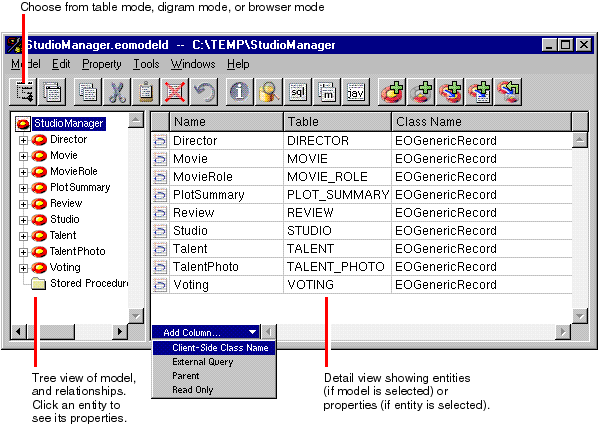

Creating a Java Client WebObjects Application
Even if you use an existing model or create a model with the wizard after selecting all the automated functions, you still need to do, or at least verify, the following things:
In Project Builder's project browser, click Resources in the leftmost columnSelect StudioManager. eomodeld .
Double-click the EOModeler document icon, displayed above the right side of the project browser.
If no Client Side Class column appears in the Model Editor, choose Client-Side Class Name from the pop-up list at the bottom of the Model Editor.
The steps you should perform with EOModeler are described in more detail in the following sections.
© 1999 Apple Computer, Inc.